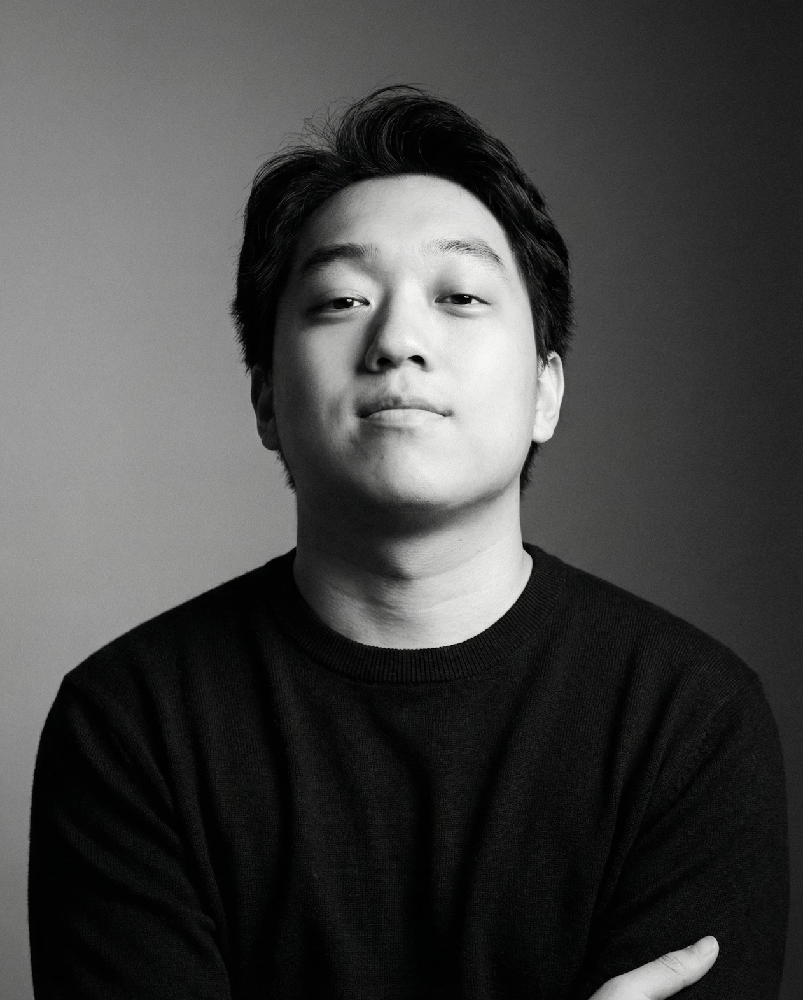
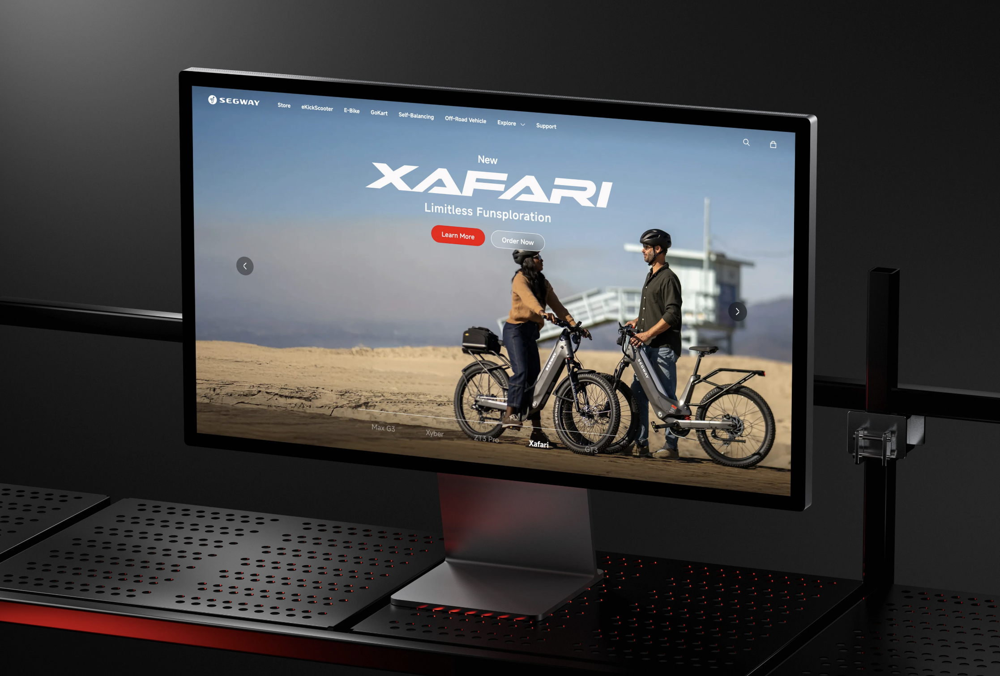
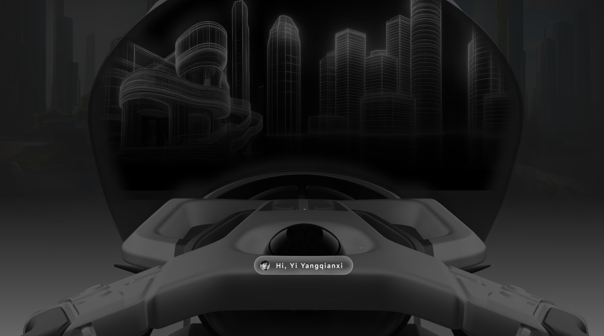
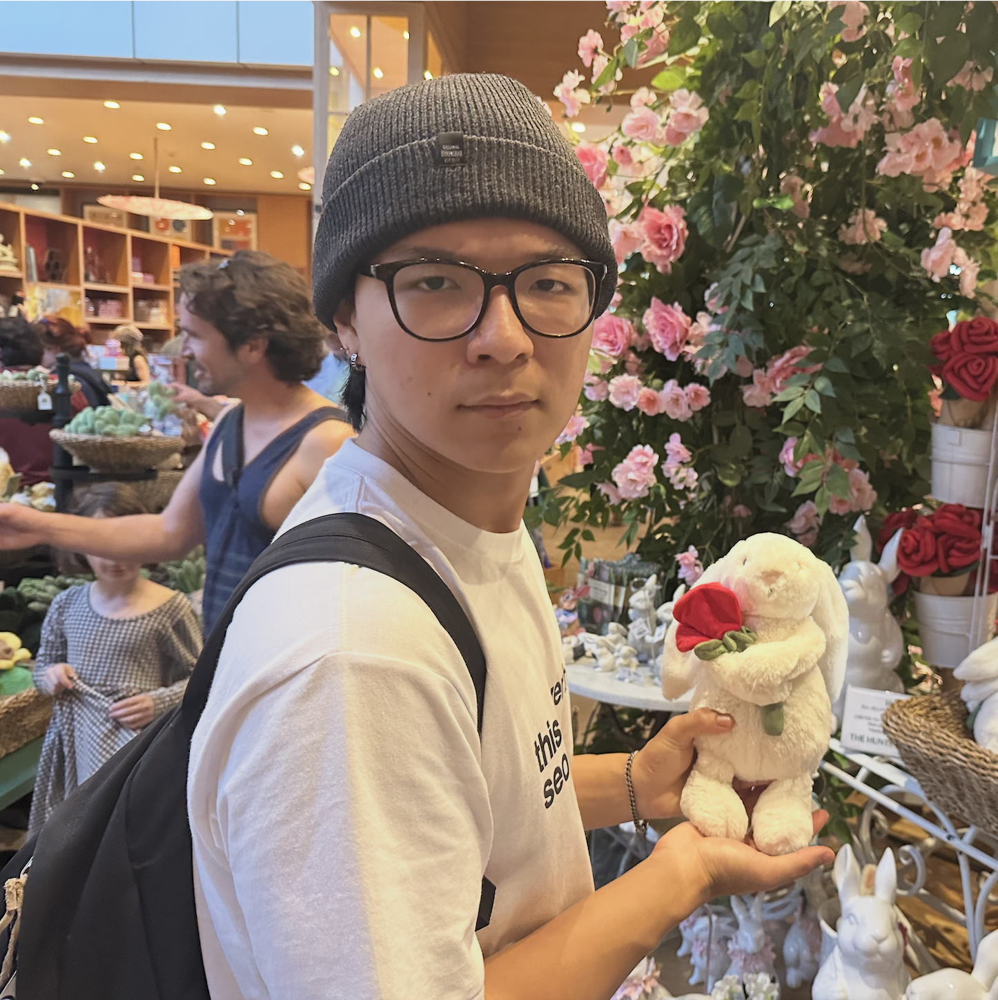

Interviewing Daniel:
Interviewing ArtCenter IxD students
Daniel is a 10th-term Interaction Design student at ArtCenter College of Design, preparing to graduate this year. Originally interested in music, he shifted paths after discovering Interaction Design as a field that blends creativity with technical problem-solving. His work spans website design and HMI for future mobility concepts, including a recent 6-month internship at Segway where he contributed to global website systems and sci-fi concept vehicle interfaces. He is especially interested in product interfaces and HMI design, taking a cross-disciplinary approach that connects digital and physical experiences. Outside of design, he enjoys riding motorcycles, exploring Los Angeles, and spending time with his cat.
3/30/2026

"Just try to explore more, to learn more while you still have time."
Interview Questions
Q: Why did you choose ArtCenter and Interaction Design?
A: "I was originally interested in music, especially drums, but there was pressure to pursue something more stable like computer science. Interaction Design felt like a good balance between design and coding, so it satisfied both sides. When I researched schools like CCA, SVA, and Pratt, ArtCenter stood out as the best option for me."
Q: How has your experience at ArtCenter been so far?
A: "Academically, it prepares you pretty well for the industry. The HTML/CSS classes, like Interactive Prototype 1 and 2, were actually enough for me to understand engineer workflows and communicate with them during my internship.
It's not really like a traditional campus experience though—it feels more like going to work than going to school."
Q: What's been your most impactful class at ArtCenter?
A: "Rapid Prototyping was the most transformative class for me. It introduced tools like SolidWorks and shifted my focus from just UI/UX to HMI and product interface design.
Graduate Studio is also very important since it's required to graduate, but Rapid Prototyping really changed my direction."
Q: How have you grown since your beginning terms?
A: "I think I've become more open to different types of design. At the beginning, I was mostly focused on web and app design, but over time I started exploring product interfaces and HMI.
That shift came from trying new tools and classes, which helped me understand what I actually enjoy working on."
Q: What's been the biggest challenge in the program for you personally?
A: "The biggest challenge is communication, especially when working with people from different backgrounds. During my internship, I worked with product managers, engineers, transportation designers, and more.
Everyone speaks a different 'language,' so it takes time to understand each other. At first it was difficult, but over time you learn how to collaborate better."
Q: What advice would you give to incoming students?
A: "Try as many things as you can while you still have time. Explore different areas like game design, motion design, branding, and product design. I personally regret not taking game design earlier because it limited my portfolio for certain opportunities.
Also, don't be afraid to make mistakes—this is the time to experiment and figure out what you like."
"Take the time to explore different areas early — it shapes your direction a lot more than you expect."
Q: Can you tell me about your internship experience at Segway?
A: "I worked there for six months, mainly designing websites and HMI for concept vehicles. I helped create design systems for the global website and an e-commerce platform, which made it easier for engineers to implement designs.
I also designed interfaces for two concept cars set in 2050 for a sci-fi film, which involved collaborating with product designers, film teams, and transportation designers. It was a really cross-functional experience."
Q: Is there anything you're working on right now?
A: "Right now, I'm working on my graduation project, which is about designing a carbon-neutral train experience for 2035.
It's a collaborative project with a product design student, so we're focusing on both the physical and digital experience together."
Some of My Work

Segway Ninebot Global Official Website 3.0 — A global website redesign internship Daniel did/p>

Final Upload — A transportation concept internship Daniel had previously worked on
Where to Find Me
https://danielgu.net/
Daniel
Interviewee

Sunwoo
Interviewer